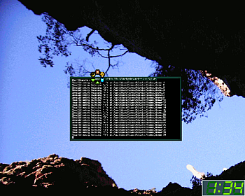
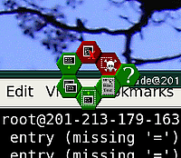

UWM
Archivierte Anleitung
Dieser Artikel wurde archiviert, da er - oder Teile daraus - nur noch unter einer älteren Ubuntu-Version nutzbar ist. Diese Anleitung wird vom Wiki-Team weder auf Richtigkeit überprüft noch anderweitig gepflegt. Zusätzlich wurde der Artikel für weitere Änderungen gesperrt.
Artikel für fortgeschrittene Anwender
Dieser Artikel erfordert mehr Erfahrung im Umgang mit Linux und ist daher nur für fortgeschrittene Benutzer gedacht.
Zum Verständnis dieses Artikels sind folgende Seiten hilfreich:
UWM  (Unix Desktop Environment Window Manager) ist ein alternativer Fenstermanager, der auf einer neuartigen Bedienungsphilosophie aufbaut. Kennzeichnend für die Oberfläche ist die völlige Abwesenheit von Icons auf dem Desktop - alle Aktionen können mit der Maus an einer nahezu beliebigen Stelle ausgeführt werden.
(Unix Desktop Environment Window Manager) ist ein alternativer Fenstermanager, der auf einer neuartigen Bedienungsphilosophie aufbaut. Kennzeichnend für die Oberfläche ist die völlige Abwesenheit von Icons auf dem Desktop - alle Aktionen können mit der Maus an einer nahezu beliebigen Stelle ausgeführt werden.
Seine beiden größten Vorteile: Der gesamte Bildschirminhalt kann ohne expliziten Vollbildmodus ausgenutzt werden, und nach einer Eingewöhnungsphase kann sich der Arbeitsprozess durchaus schneller als bei traditionellen Desktop-Umgebungen gestalten. Man muss z.B. nie auf einer wie auch immer gearteten Taskleiste nach Programmen suchen, sondern erledigt alles mit den beiden Maustasten an einer beliebigen Stelle auf dem Fensterrahmen.
Die Nachteile: Für Einsteiger ist die Konfiguration eventuell etwas umständlich, denn wenn man etwa das Theme oder die Mausbelegung ändern will, muss man Textdateien editieren, ein grafisches Editiertool gibt es bisher nicht. Die Dateien sind aber vorbildlich mit Kommentaren versehen, so dass man kaum etwas falsch machen kann. Ein weiterer Nachteil ist die bisher nur rudimentäre Unterstützung von Tastatur-Shortcuts sowie die Tatsache, das etwa eine Uhr nachträglich installiert werden muss.

Installation¶
UWM kann bis einschließlich Ubuntu 11.04 über folgendes Paket installiert werden [1]:
uwm (universe)
 mit apturl
mit apturl
Paketliste zum Kopieren:
sudo apt-get install uwm
sudo aptitude install uwm
Aus dem Quellcode kompilieren¶
Hierfür lädt man sich auf der Projektseite den Quelltext der aktuellen Version herunter und kompiliert ihn [2].
Anschließend muss man im Displaymanager noch einen Eintrag hinzufügen, damit UWM als Session gestartet werden kann.
Konfiguration¶
Damit man in UWM überhaupt Programme starten kann, muss man sich vorher ein wenig mit der Konfiguration befassen. Leider gibt es bisher kein grafisches Konfigurationsprogramm für UWM, also muss ein Texteditor bemüht werden, um die Konfigurationsdateien zu bearbeiten. Diese liegen im Ordner /etc/X11/ude oder /etc/X11/uwm und sollten als erstes in den Ordner ~/.ude/config kopiert werden. Dieser Ordner muss ggf. vorher noch angelegt werden. Dort nimmt man dann alle Änderungen vor. Grundsätzlich sollten Einstellungen nur in Dateien mit der Endung .hook vorgenommen werden. Die Dateien ohne Endung verweisen auf diese Dateien.
Die zentrale Konfigurationsdatei ist uwmrc, von der standardmäßig auf folgende Unterdateien verwiesen wird:
uwmrc-layout.hook: Layout-Einstellungen (Rahmenfarbe etc.)
uwmrc-ws.hook: Workspace-Einstellungen (virtuelle Desktops)
uwmrc-behaviour.hook: Bedienungs-Einstellungen (Mausbelegung, Shortcuts)
uwmrc-user.hook: Benutzer-Einstellungen (optional, wird im Regelfall nicht benötigt)
Die Einstellungen sind in den entsprechenden Dateien ausführlich (auf englisch) erklärt.
Bei einer Installation von UWM aus den Ubuntu-Paketquellen ist zu beachten, dass das Anwendungs-Menü standardmäßig leer ist und man es erst einmal füllen muss, um überhaupt Anwendungen starten zu können. Als Startpunkt kann man erst einmal folgendes in die neu zu erstellende Datei appmenu.hook kopieren:
% -*-Mode: Shell-Script;-*-
% Anybody volunteering to write a dedicated Emacs mode?
%
% /etc/X11/ude/appmenu-post.hook
%
% Additional entries in the main menu. The entries are added at the
% end of the menu.
%
% Please read /usr/doc/ude/uwm_manual.ascii.gz and/or
% /usr/doc/ude/manual.dvi for more information.
% A menu definition file is a hierarchical file made up of the
% following commands:
%
% SUBMENU "<name>" {'commands to build submenu'}
% Will create a submenu named <name> with the items created by
% the commands inside the braces.
%
% ITEM "<name>":"<command>";
% Will create an item on the corresponding position named <name>
% which will lead to the execution of <command> if selected. The
% item is not created in case there already exists an item with
% the same <name> in the same submenu.
%
% LINE;
% Will add a seperation line to the corresponding
% position. Several "LINE"s with nothing else in between will be
% truncatd to a single seperator.
%
% FILE "<filename>";
% Will process the named file as if its contents were in the
% position of the "FILE" command. The file is searched for in
% the way described above and passed through the preprocessor.
%
% PIPE "<command>";
% Will call <command> and process its standard output as if it
% was in the position of the "PIPE" command. The commands output
% is not passed through the preprocessor.
ITEM "GNOME-Terminal":"gnome-terminal";
ITEM "Nautilus":"nautilus --no-desktop";
LINE;
SUBMENU "xterm" {
ITEM "login shell":"xterm -sb -sl 2000 -bg black -fg lightblue -fn 7x14 -ls";
ITEM "bash":"xterm -sb -sl 2000 -bg black -fg lightblue -fn 7x14 -e bash";
ITEM "root shell":"xterm -sb -sl 2000 -bg \\#ff8c6d -fn 7x14 -e su";
}
ITEM "TKDesk":"tkdesk";
LINE;
FILE "mountmenu";
LINE;
SUBMENU "Science" {
ITEM "MuPAD":"xmupad";
ITEM "Scilab":"scilab";
}
SUBMENU "Documentation" {
ITEM "TkMan":"tkman";
SUBMENU "Books" {
PIPE "$UDEdir/extras/tools/dirtomenu /usr/doc/Books/ .dvi xdvi";
}
}
SUBMENU "Editors" {
ITEM "Gedit":"gedit";
ITEM "gvim":"gvim";
ITEM "Nedit":"nedit";
ITEM "Xcoral":"xcoral";
ITEM "Xemacs":"xemacs";
}
LINE;
ITEM "Firefox":"firefox";
LINE;
SUBMENU "Office" {
ITEM "Open Office":"ooffice";
ITEM "LyX":"lyx";
}
SUBMENU "Graphics" {
SUBMENU "CAD" {
ITEM "qCAD":"/usr/qcad/qcad.sh";
}
SUBMENU "Drawing" {
ITEM "xfig":"xfig";
ITEM "tgif":"tgif";
}
LINE;
SUBMENU "Bitmaps" {
ITEM "The GIMP":"gimp";
ITEM "XV":"xv";
ITEM "ImageMagick":"display";
}
}
LINE;
SUBMENU "Fun" {
ITEM "XawTv":"xawtv";
SUBMENU "Games" {
ITEM "XBill":"xbill";
LINE;
ITEM "XHextris":"xhextris";
ITEM "Color XHextris":"cxhextris";
}
}Es handelt sich dabei um eine leicht angepasste Version der Datei appmenu aus dem Source-Code-Paket von UWM. Im Ubuntu-Paket ist keine entsprechende Datei enthalten. Viele der eingetragenen Programme werden nicht standardmäßig mit Ubuntu installiert und alle nicht benötigten Einträge können natürlich gelöscht werden.
Weiterhin von Interesse sind die zwei Skripte StartScript.hook und StopScript.hook, mit deren Hilfe sich beispielsweise Hintergrundbilder und Tools anzeigen lassen. Dies ist besonders dann nützlich, wenn man z.B. eine Uhr oder eine Wetteranzeige einbauen will. StartScript.hook wird am Anfang geladen, StopScript.hook dagegen am Ende, wenn UWM herunterfährt.
Um ein Hintergrundbild einzubinden, ist folgender Befehl in StartScript.hook einzutragen:
display -geometry 1280x1024! -window root DATEINAME.jpg &
Wobei die Auflösung natürlich selbst bestimmt werden kann. Die Einbindung erfolgt über ImageMagick.
Die Einbindung einer Uhr erfolgt entsprechend über ihren Startbefehl, z.b. dclock oder xclock.
Benutzung¶
Nun kann man einen ersten Probestart von UWM vornehmen. Es sollte ein schwarzer Bildschirm erscheinen. Vom Anwendungs-Menü (siehe unten) aus kann man Anwendungen starten und so schon einmal die Funktionen des Fenstermanagers ausprobieren.
Die Menüs¶
Auf leeren Feldern des Desktops kann man mit den drei Maustasten die verschiedenen Menüs aufrufen:
 - UWM-Menü: Enthält Grundfunktionen, insbesondere das Schließen und Neustarten des Fenstermanagers.
- UWM-Menü: Enthält Grundfunktionen, insbesondere das Schließen und Neustarten des Fenstermanagers.  - Virtuelle Desktops: Hier kann man zwischen (standardmäßig) drei verschiedenen Desktops und den darin enthaltenen offenen Anwendungen hin- und herwechseln.
- Virtuelle Desktops: Hier kann man zwischen (standardmäßig) drei verschiedenen Desktops und den darin enthaltenen offenen Anwendungen hin- und herwechseln.  - Anwendungs-Menü: Entspricht dem Startmenü anderer Desktopumgebungen. Hier kann man verschiedene Anwendungen starten. Aber Achtung: UWM erkennt nicht automatisch, welche Anwendungen installiert sind und wo. Man muss also im Regelfall die Menüs erst konfigurieren, um eine arbeitsfähige Oberfläche zu erhalten. Zu Beginn reicht es, die Anwendungen über ein Terminal [5] zu starten.
- Anwendungs-Menü: Entspricht dem Startmenü anderer Desktopumgebungen. Hier kann man verschiedene Anwendungen starten. Aber Achtung: UWM erkennt nicht automatisch, welche Anwendungen installiert sind und wo. Man muss also im Regelfall die Menüs erst konfigurieren, um eine arbeitsfähige Oberfläche zu erhalten. Zu Beginn reicht es, die Anwendungen über ein Terminal [5] zu starten.
Das Hexmenü¶
Wenn ein Fenster bereits geöffnet wurde, wird man zunächst einmal die klassischen Schaltflächen zum Schließen, Minimieren und Maximieren vermissen. Diese Aktionen geschehen in UWM mit dem sogenannten Hex-Menü oder Honeycomb (Bienenwaben-)Menü. Es erscheint, wenn man mit der linken Maustaste auf eine beliebige Stelle des Rahmens klickt.
Das Hexmenü, das übrigens von der Oberfläche des Spiels "Battle Isle" inspiriert wurde, funktioniert wie ein Pie Menu, das heißt, die Maustaste muss solange gedrückt bleiben, bis eine Option durch das Zeigen in eine bestimmte Richtung ausgewählt wird. Folgende Bedeutungen haben die Icons im Uhrzeigersinn:

oben: Schließen
oben rechts: xkill (Programm "abschießen", mit Sicherheitsabfrage)
unten rechts: Wechseln des virtuellen Desktops
unten: Minimieren
unten links: Fenster nach vorne holen
oben links: Fenster in den Hintergrund
Hat man den Dreh einmal raus, wird man merken, dass die Bedienung dieses Menüs sehr einfach und intuitiv ist.
Wechseln zwischen Anwendungen¶
Was tun aber, wenn alle Anwendungen maximiert sind? Auch hier hat UWM eine eigene Lösung. Das Wechseln zwischen den Anwendungen wird mit einem auf den Fensterrahmen eingeleitet, ein anschließender öffnet das nächste Fenster. So kann man sich nacheinander durch alle geöffneten Fenster klicken.
Aussehen¶
Wem UDE in der Originalversion zu altbacken aussieht, der findet auf der Projektseite Themes und Hexicon-Sets zum herunterladen.
 - Artikel LinuxUser, 10/2002
- Artikel LinuxUser, 10/2002- Erstellt mit Inyoka
-
 2004 – 2017 ubuntuusers.de • Einige Rechte vorbehalten
2004 – 2017 ubuntuusers.de • Einige Rechte vorbehalten
Lizenz • Kontakt • Datenschutz • Impressum • Serverstatus -
Serverhousing gespendet von